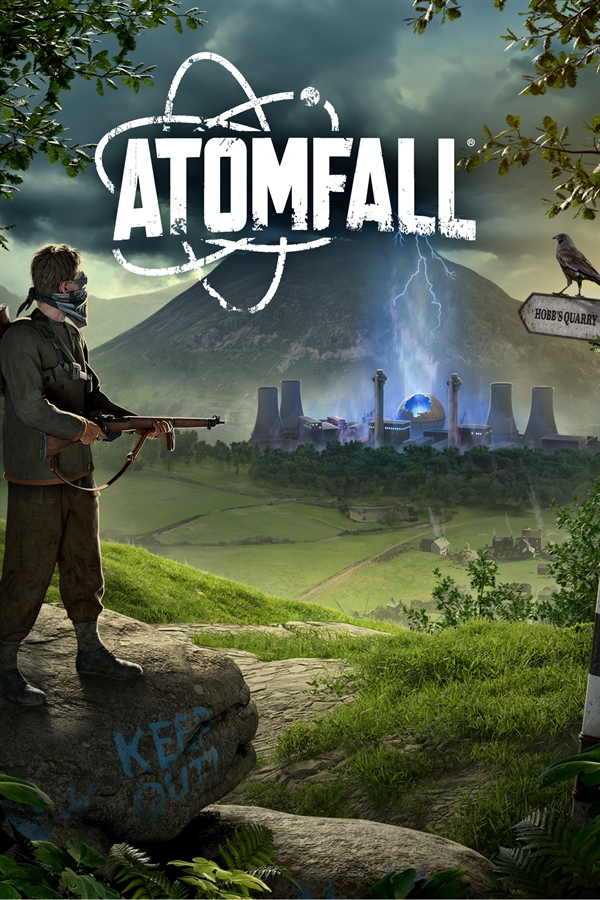

Atomfall
Every archived year-end list appearance, including placement and points earned.
About the Game
Deluxe EditionBuy the Atomfall Deluxe Edition to receive:• The entire Atomfall game• “Story Expansion Pack” – (*not available Day 1):• “Basic Supply Bundle” Pack• “Enhanced Supply Bundle” Pack About the GameA survival-action game inspired by real-life events, Atomfall is set five years after the Windscale nuclear disaster in Northern England.Explore the fictional quarantine zone, scavenge, craft, barter, fight and talk your way through a British countryside setting filled with bizarre characters, mysticism, cults, and rogue government agencies.From Rebellion, the studio behind Sniper Elite and Zombie Army, Atomfall will challenge you to solve the dark mystery of what really happened.Player Driven Mystery: Unravel a tapestry of interwoven narratives through exploration, conversation, investigation, and combat, where every choice you make has consequences.Search, Scavenge, Survive: You’ll need to scavenge for supplies, craft weapons and items, and fight desperately to make it out alive!Desperate Combat: With weapons and ammunition scarce, each frenetic engagement will see you blend marksmanship with vicious hand-to-hand combat. Manage your heart rate to hold a steady aim and ensure you have the energy you need to reach for your cricket bat and land the killer blow.Green and Unpleasant Land: The picturesque British countryside, with rolling green hills, lush valleys, and rural villages belie the dangers that await you. Navigate cult-controlled ruins, natural caves, nuclear bunkers and more as you explore this dense, foreboding world.Reimagining Windscale: A fictional reimagining of a real-world event, Atomfall draws from science fiction, folk horror, and Cold War influences to create a world that is eerily familiar yet completely alien.
| Released | 2025-03-27 |
|---|---|
| Developer | Rebellion |
| Publisher | Rebellion |
| Genres | Action, Adventure, RPG |
| Platforms | PC, Xbox Series S/X, PlayStation 5 |
SingleplayerSteam AchievementsMultiplayerFull controller supportSteam CloudAtmosphericOpen WorldFirst-PersonSci-fiFPSGoreSurvival
Where to Buy
Game information provided by RAWG.
Points by Year
List History
| Year | Source | List | Placement | Points |
|---|---|---|---|---|
| 2025 | Eurogamer | The 50 best games of 2025, ranked | 38 | 1 |
| 2025 | Geeky Brummie | Top 50 Most Notable Games of 2025 | 45 | 1 |
| 2025 | NME | THE 20 BEST GAMES OF 2025 | NME.com | 18 | 3 |
| 2025 | NPR | The best games of 2025, picked by NPR's staff | Unranked | 1 |